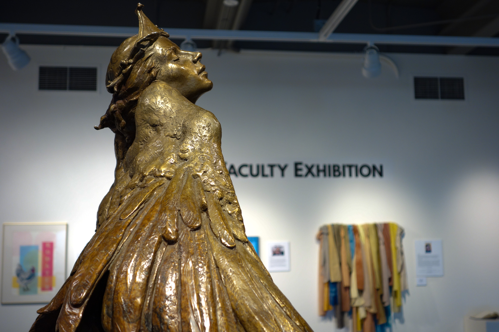
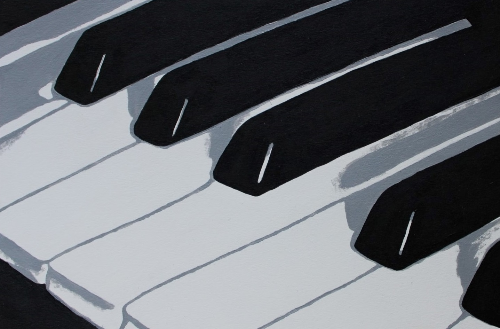
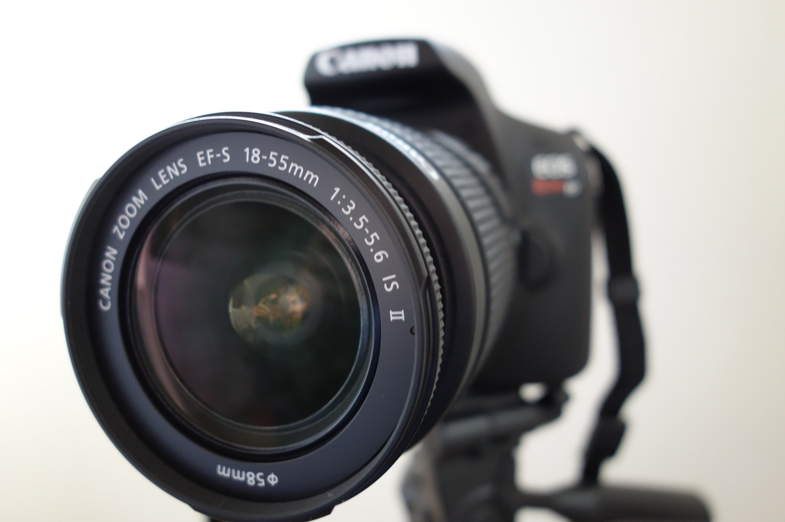
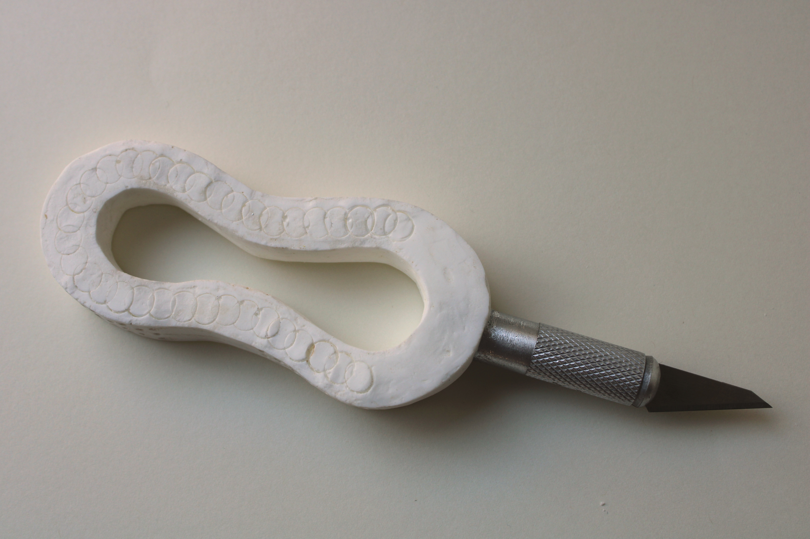

Hello!
My name is Kailey Slocum
Home
About
Gallery
Videos
Blogs
MUL101 Blog
ART115 Blog
MUL105 Blog
ART117 Blog
So far I've created blog posts of four LCC classes. Check them out below!

MUL 101: Intro to Media Arts
A Little About Me
Media Arts Campus Resources: on Camera
Reviewing an Online Blog: Depositphotos
Working with Audio: An Aesop's Fable
Image Editing: The Five Senses
Final Project: Slowing Down

115: Intro to Design
Ripped Paper Portrait and Collage
Design Journal
Figure-Ground Relationships
Pattern and Repetition
Symmetry
Final Project

MUL 105: Digital Photography
Week 1: Self-Portraits
Week 2: Photography Research
Week 3: ISO, Aperture, and Shutter Speed
Week 4: Lines, Patterns, Texture and Time
Week 5: Portrait Photography
Week 10: Final Project

ART 117: 3D Design
Week 2: Bamboo Bridge
Week 3: Elements of Design
Week 4: Paper Planes
Week 5: Scale and Proportion
Week 6: Material Shift
Final Project: Prototype Project